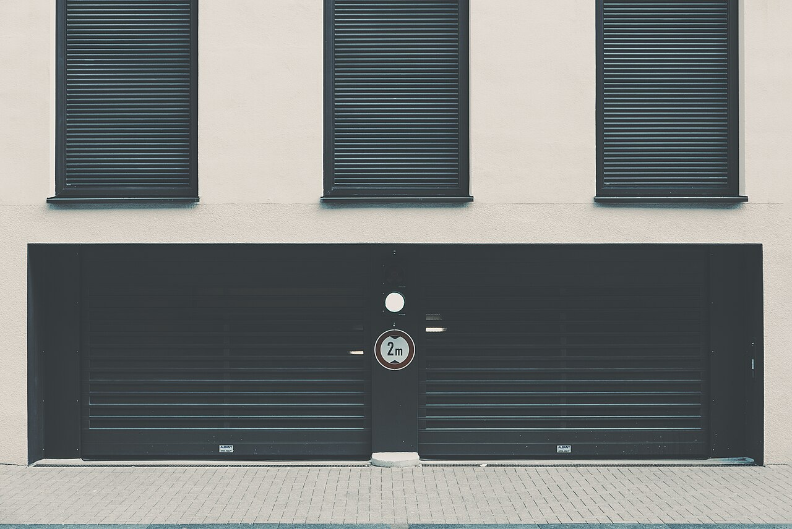

Garage Door Repair
Doors come off their tracks, panels bend, hinges wear, and rollers seize. We diagnose the real cause instead of just treating the symptom — and because our trucks are fully stocked, most repairs are done in a single visit.
- Off-track and misaligned doors
- Bent or damaged panels & sections
- Noisy, jerky, or slow operation
- Doors that won't fully open or close
